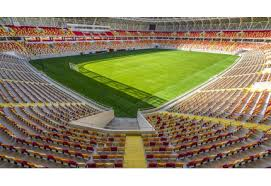
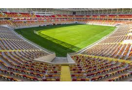

19890 yılında Malatya Belediyespor olarak kurulmuş ve renkleri turuncu-yeşil olarak kabul
edilmiştir. Malatya Belediyespor amatör kümeden 2 sezon içinde 2. Lig'e çıkarak büyük bir
başarıya imza atmıştır. Bu başarıya önce 1997-1998 yılında 3. Lige yükselerek ardından bir sezon
sonra 1998-1999 sezonunda 3. Lig'de şampiyon olarak 2.Lig'e çıkarak ulaşmıştır.
1999-2000 sezonunda 2. Lig'de grubunda sonuncu olup 3. Lig'e düşmüş, 2000-2001 sezonunda da 3.
Lig'den Amatör Lig'e düşmüştür. 2006-2007 sezonunda Amatör Lig'den 3. Lig'e çıkan Malatya
Belediyespor 2007-2008'de 3. Lig 1. Grup'ta averajla 2. olmuş ve 2. Lig'de oynamaya hak
kazanmıştır. Aynı sezon, küme düşerek 3. Lig'e düşmüştür. 2009-2010 sezonunda Play-offlarla
tekrar ikinci lige çıkan Malatya Belediyespor ismini Yeni Malatyaspor olarak değiştirmiştir. 12
Mayıs 2012 tarihli kongre ile adı Yeni Malatyaspor'dan Malatyaspor Futbol Kulübü'ne
dönüştürülmüş, renkleri sarı-kırmızı kabul edilmiştir ama UEFA kriterleri nedeniyle isim
değişikliği TFF tarafından onaylanmamıştır. Son olarak Yeni Malatyaspor ismiyle devam etmesine
karar verilmiştir. Kulübün resmi sitesinde belirtiliği üzere resmi renkleri sarı-siyah, üçüncü
rengi kırmızı olarak beyan edilmiştir.[2][3] Malatyaspor ile Yeni Malatyaspor aynı takım
değildir. Takım, 2014-15 sezonunda TFF 2.Lig Beyaz Grubu şampiyon olarak tamamlamış ve tarihinde
ilk kez 1. Lig'e yükselmiştir.[4] 2015-16 sezonu öncesinde Sunday Mba'yı kadrosuna katarak,
kulüp tarihindeki ilk yabancı futbolcu transferi gerçekleştirilmiştir.[5] Son olarak 8 Ekim
2015'te, kötü sonuçlar nedeni ile teknik direktör Yücel İldiz ile yollarını ayırmış[6] ve 11
Ekim 2015'te teknik direktör İrfan Buz ile anlaşma sağlanmıştır.[7] 23 Aralık 2015'te isim
sponsorluğu alarak ismi, Alima Yeni Malatyaspor olmuştur.[8] Alima ile olan anlaşmanın 2016'da
bitmesiyle Yeni Malatyaspor adına dönen kulüp, 30 Kasım 2016'da yeni bir sponsorluk anlaşmasıyla
Evkur Yeni Malatyaspor adını almıştır.[9] 2016-2017 Sezonunda 1. Ligde 2. olarak Süper Lige
yükseldi.
2019-20 sezonu öncesinde gerçekleşen olağan genel kurulda mevcut başkan Adil Gevrek tekrar
başkanlık görevine seçildi.[10] Kongrenin ardından teknik direktörlük görevine Sergen Yalçın'ın
getirildiği açıklandı.[11]15 Ocak 2020 tarihinde Sergen Yalçın ile yollar ayrıldı.Sergen
Yalçın'dan boşalan koltuğa Kemal Özdeş oturdu, görevini 01 Mart 2020 tarihinde bıraktı.
 

.jpg)
.jpg)
.jpg)
.jpg)
.jpg)